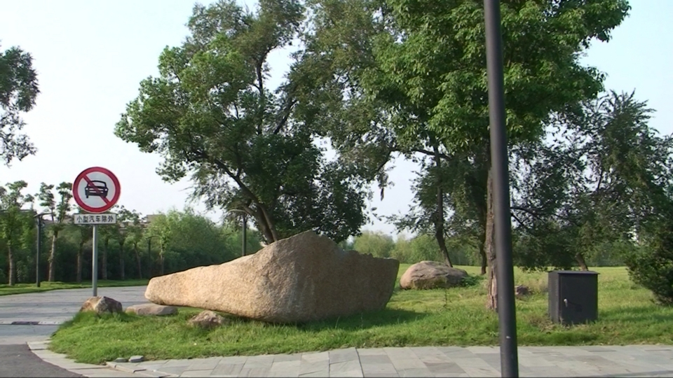

Homework 6: Depth Estimation Using MRF
Instructions:
- Install Graphcuts for Python by executing: pip install PyMaxflow. Read the online documents [website] to know how to set the edges of the graph.
- Write a program in python to clean up noise of the image
below based on MRFs and the binary graphcuts. See the
pseudocode in C here.


Figure 1. Left: Input noisy image. Right: Expected output.
- Write a python program to estimate a depth from a pair of
rectified images below using MRF and graphcuts. Note,
rectified images mean any corresponding pixels from both
images have the same y-axis (in other words, we can draw a
horizontal lines for any corresponding pixels).


- Write a python program to estimate a depth from a pair of
calibrated images below using MRF and graphcuts. The camera
matrices are available here. Note that for find the epipolar
line, using the provided camera matrices, you might want to use
the following equation:

If you want to understand the equation, read this short report here: pdf.

Submission:
Submit your python codes in an ipython notebook format (and your input and output images) via Canvas by the deadline on October 28, at 1pm.